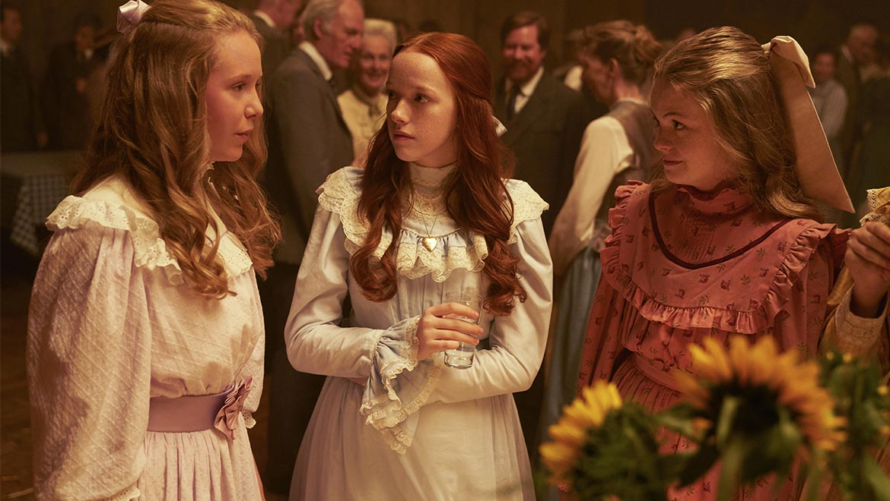
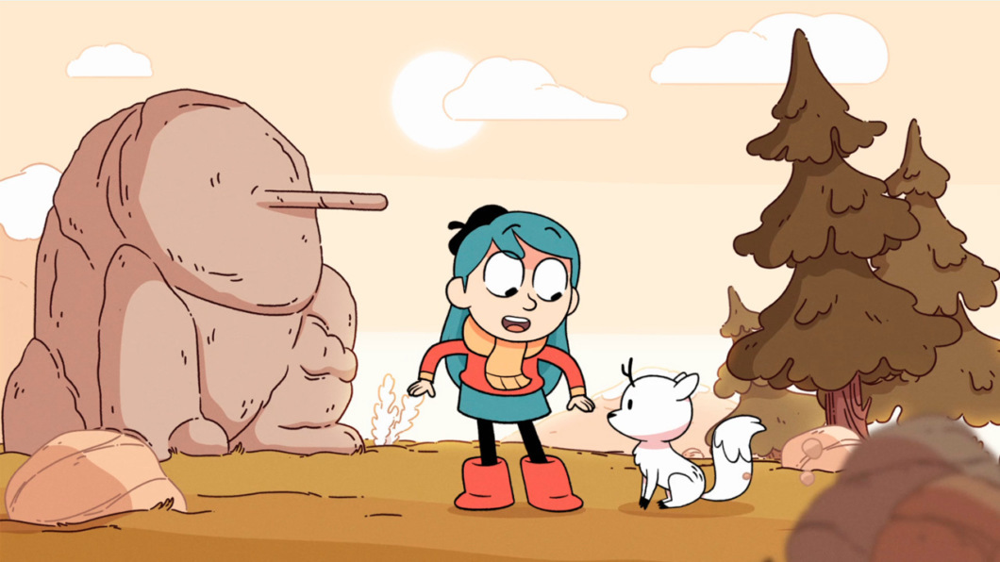
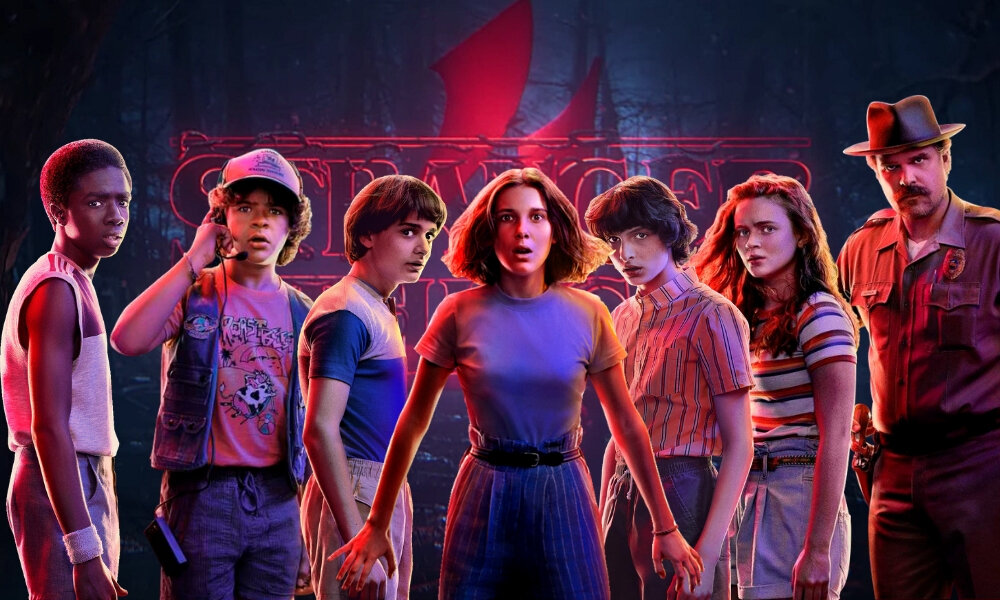
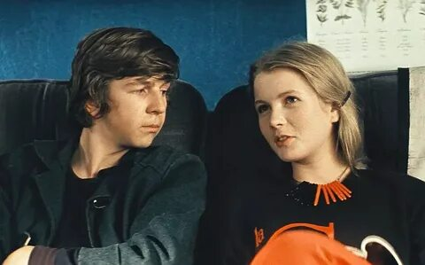

-
Качество:
- Хорошая игра актёров
- Качество звука
- Захватывающая атмосфера

-
Качество:
- Хорошо подобранная палитра цветов
- Захватывающий сюжет
- Необычный стиль рисовки

-
Качество:
- Интересный и необычный сюжет
- Крутые спецэффекты
- Хороший звук и перевод текста

-
Качество:
- Фильм описывает жизненную ситуацию
- Атмосфера 80х и 90х
- Отличная игра актёров

-
Качество:
- Красивые локации
- Хорошо проработанные костюмы
- Фильм подойдёт для всей семьи